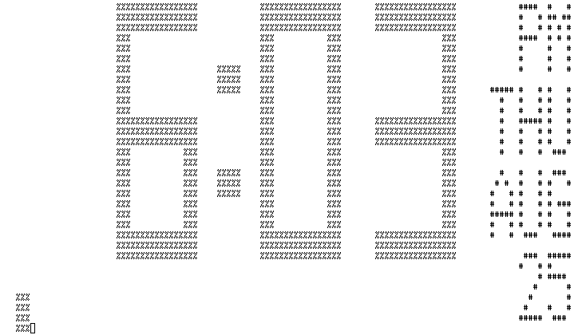
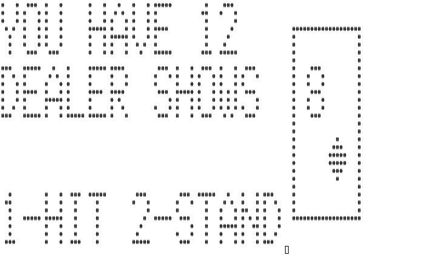
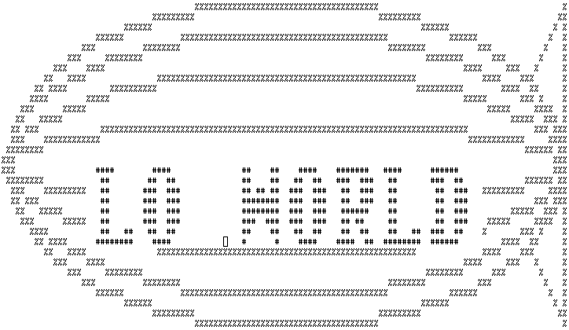

Epson HX-20 Emulator
I have made an emulator called "hex20" that emulates the Epson HX-20 Portable Computer in a Linux terminal, similar to my other Z80 CP/M, NES and C64 emulators.
The HX-20 system uses two Hitachi HD6301 CPUs (based on the Motorola 6800 family) which communicate with each other over a internal serial link. This emulator needs the ROM files for both of these to function. A CRC32 check is performed on startup to make sure that the correct version 1.0 or version 1.1 ROM files are used.
One of the main features is the emulation of the LCD panel by using curses to display each individual pixel as a '#' (or '%') on a large 120x32 terminal window. It is also possible to force a smaller 20x4 window, but then only ASCII will be displayed and none of the special pixel drawing functions will work. Most of the keyboard keys are supported and multiple international character sets can be selected.
Another feature is auto-loading of BASIC program text files. This is achieved through clever use of the HX-20 ROM software ability to do automatic key input. A '2' is injected to enter BASIC from the menu, then all the text from the file is sent, and finally a BASIC RUN command is issued to start execution. On a real HX-20 a "Ctrl/@" initialization is usually needed on a cold start, but all the necessary data is already initialized automatically by the emulator itself. The RTC is also mapped directly to the host system clock so it does not need to be set.
The initial version can be downloaded here but the code is also available in this Git repository for further development. Note that at this point several features are still missing like sound support, TF-20 floppy drive and micro-cassette emulation.
Some screenshots from the emulator running in xterm:



Development of the emulator would have been impossible without the excellent Epson HX-20 resources from F. J. Kraan's web pages.